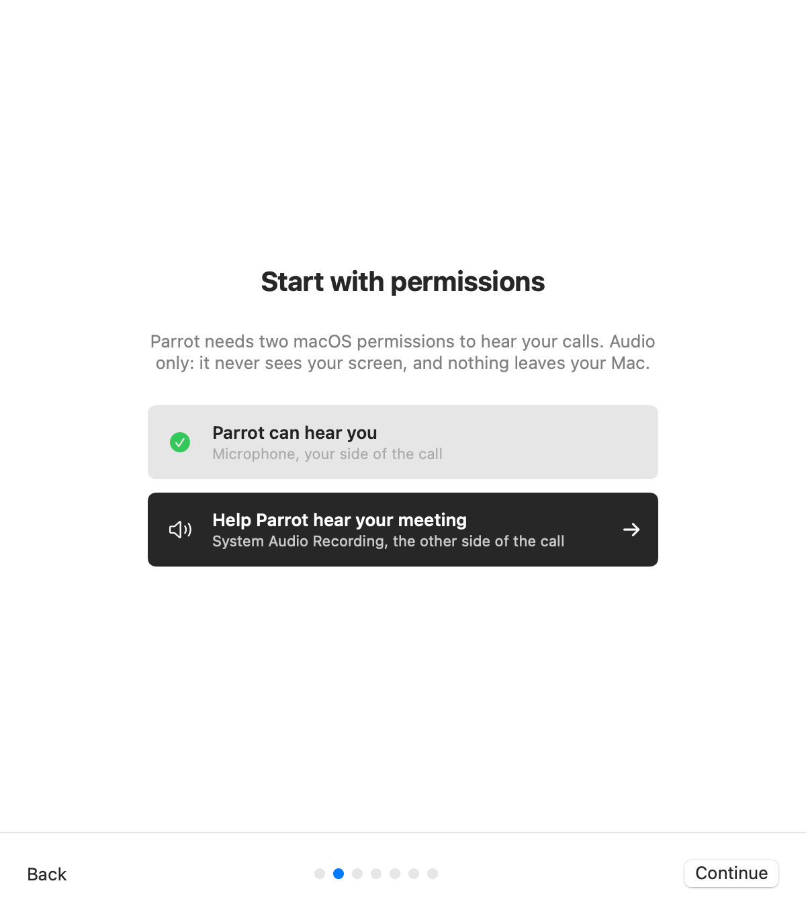
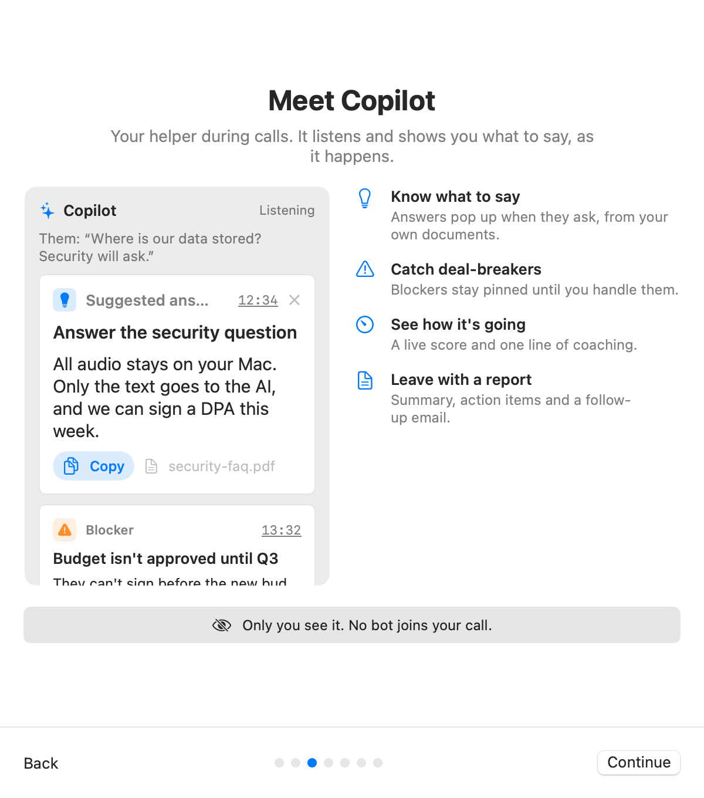
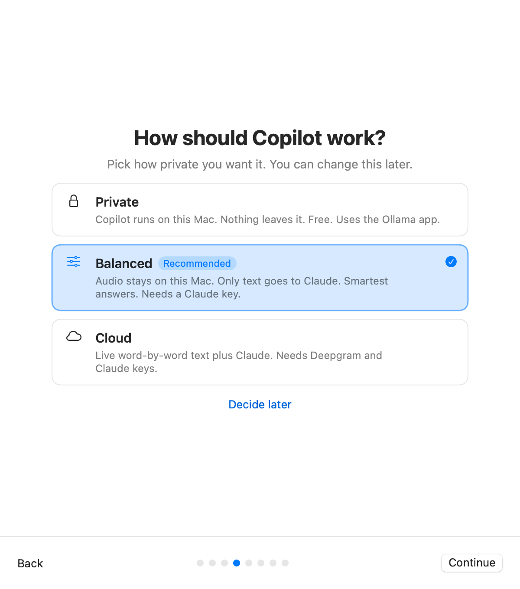
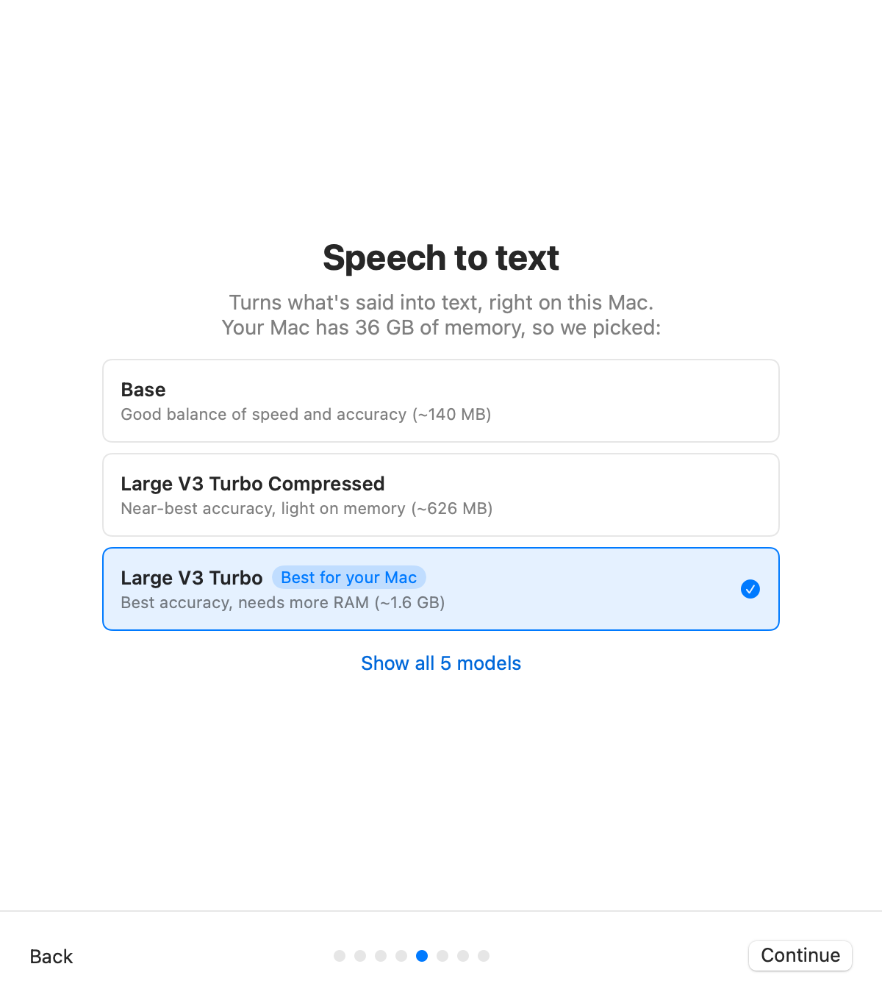
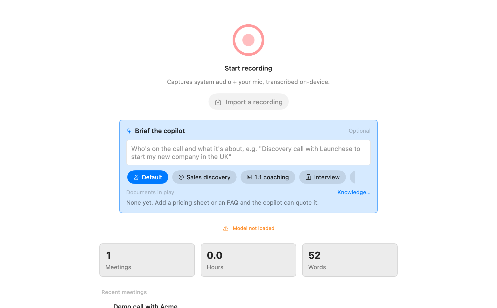

Grab the latest DMG from the
releases page, open
it, and drag Parrot into Applications. That's it. If you'd rather build from
source, clone the repo and run make run.

On first launch Parrot walks you through two macOS permissions. Click each dark button, answer the system dialog, and the row flips to a green check on its own. Both are needed to record a call properly:

Next, a short example of what Copilot does during a call: when the other side asks something, it suggests an answer from your own documents, pins deal-breakers until you handle them, keeps a live score, and writes a report after. Only you see it; no bot joins your call.

Not sure yet? Pick Decide later. A card on Home lets you set Copilot up any time, and so does Settings → Copilot → Set up Copilot.

Transcription happens on your Mac with Whisper. Parrot picks the model that fits your Mac's memory and starts downloading it right away: Large V3 Turbo on Macs with 12 GB or more, Base on smaller ones. Large V3 Turbo Compressed is the in-between: nearly the accuracy of the big one at a third of the download. The download carries on after you close the setup window, and the record button waits until it's done. After that, transcription works offline.
You can switch models any time in Settings → Transcription.

Missed something, or quit halfway through the setup? Parrot brings the tour back on its own until you finish it, and you can replay it any time from Help → Show Welcome Tour.
Hit the big record button and talk. The transcript shows up as you speak. When you're curious about the AI side of Parrot, read Setting up the Copilot. It's optional and off by default.